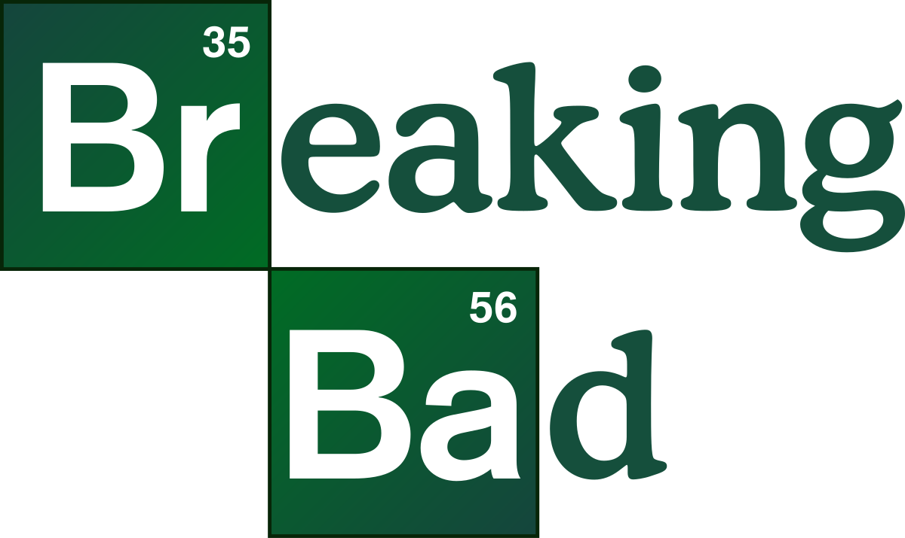

-
Better Call Saul (2015-2022)
Genre:
Crime, Drama
Better Call Saul is the prequel series to Breaking Bad. This series got me into looking deeper at camera shots and colors that the directors can use to express the mood or story in a different way. It also does not latch onto the original series like most prequels do.
-
Breaking Bad (2008-2013)
Genre: 
Crime, DramaBreaking Bad's ability to create a constant state of suspense is amazing. The character and story progression of all the characters makes this one of the best shows.
-
The Wire (2002-2008)
Genre:
Crime, Drama
The Wire is one of the most realistic shows I have ever seen. All of the characters felt so real and how they progress throughout the story is incredibly realistic.
-
The Sopranos (1997-2007)
Genre:
Crime, Comedy, Drama
The depiction of the mob in shows and films are typically more of a rose tint. The Sopranos goes a different route by showing how the mob actually is and how slimey they can be. The humor in the show is also really good.
-
Andor (2022-2025)
Genre:
Action, Sci-fi
Andor is a prequel series to the Star Wars film Rogue One. To me, the show resembles a lot like Better Call Saul with its camera shots and its more serious tone compared to typical Star Wars. I usually call this show the BCS of Star Wars.
Shows